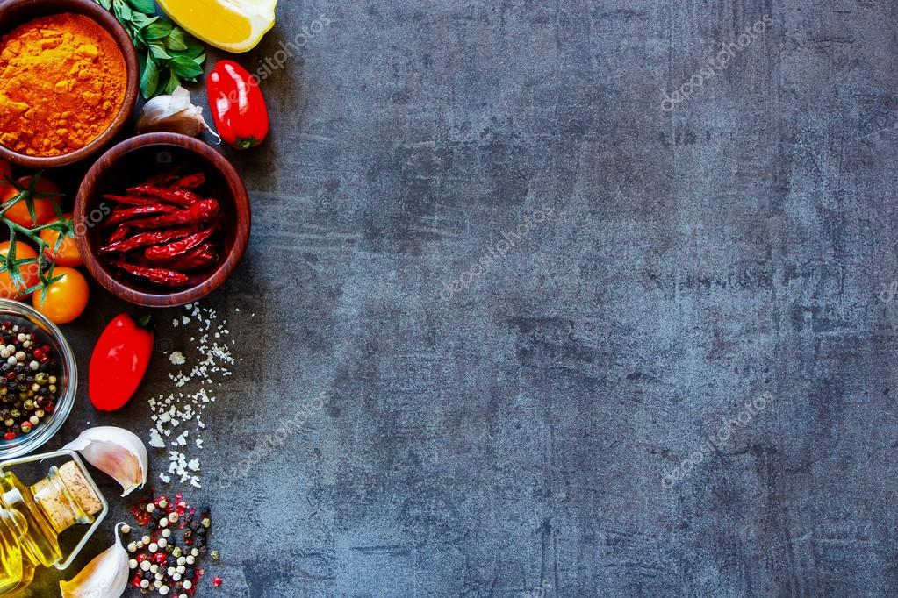

Aggala
Ingredients
- 1 cups Roasted Rice Flour
- 1/4 cup Coconut
- 100 g Sugar
- 125 ml Water
- 1/2 tsp Pepper
Instructions
- Take a pot and add a small
amount of sugar.
- Then heat it until brown color.
- Next add the rest of sugar and water
keeping stiring.
- Then let to dissolve the sugar.
- After it becomes as the texture of honey,
remove from the heat.
- Then place it aside.
- Take another pot and add coconut.
- Then cook them for a few minutes.
- Next add the sugar syrup to it. Mix well and
remove from the heat.
- Now add roasted rice flour little by
little to the coconut mixture and mix well.
- If the mixture is dry, you can add a little
hot water.
- After that add salt and pepper to it.
Now, ready the mixture.
- Then make balls from the mixure and
coat them with roasted rice flour.
